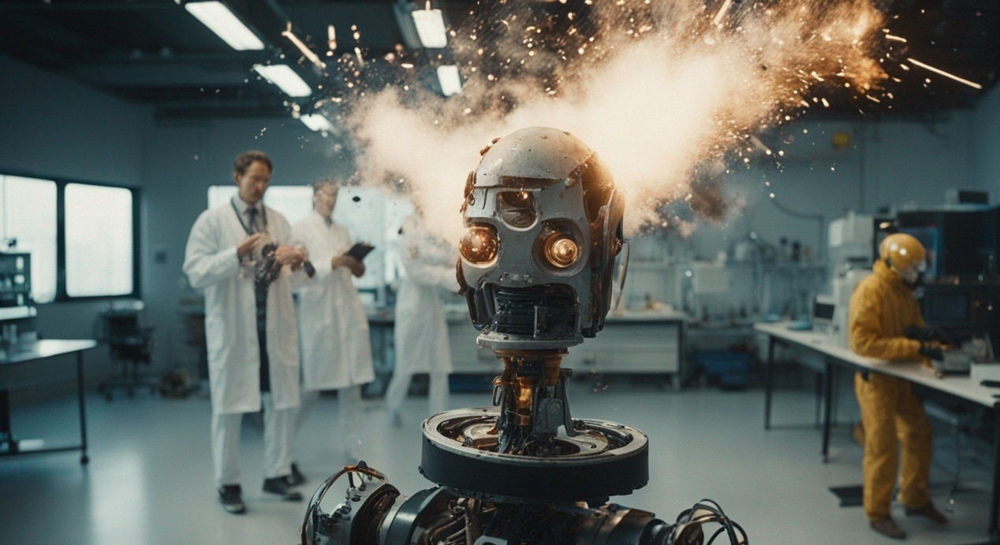
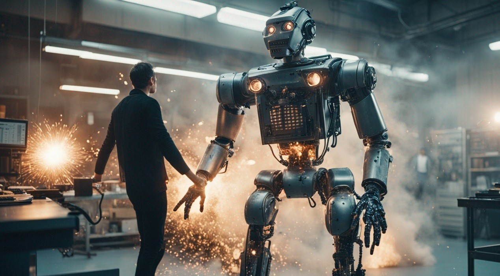

During my time at "RoboTasker," a coding hiccup inadvertently
led to my departure.


Rather than dwelling on setbacks,
I seized the opportunity to start afresh. Thus,
"BrawlBots Arena" was born , my startup dedicated to
creating a UFC-style arena for robots.
Fired from one career path, I redirected my passion for
robotics into a venture that not only satisfied enthusiasts
but also added an element of excitement to the tech world.
The shift from employee to entrepreneur showcased resilience
and adaptability, turning an unexpected exit into a victorious
entrance into the world of robotic combat. Today, BrawlBots Arena
stands as a testament to transforming challenges into thrilling
opportunities.